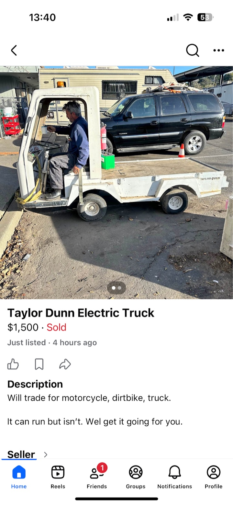
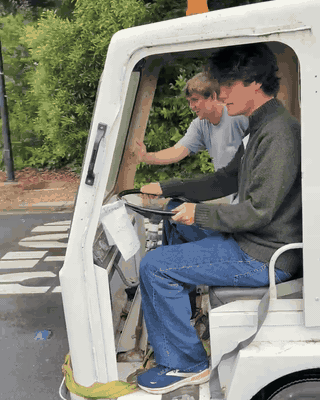
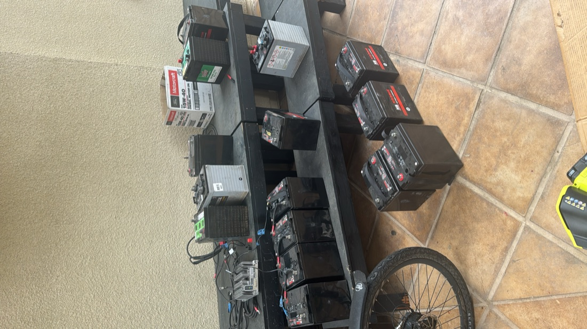
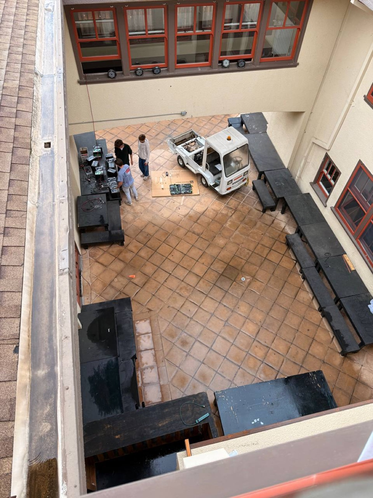
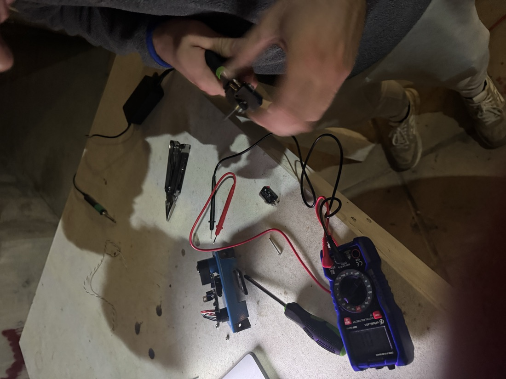
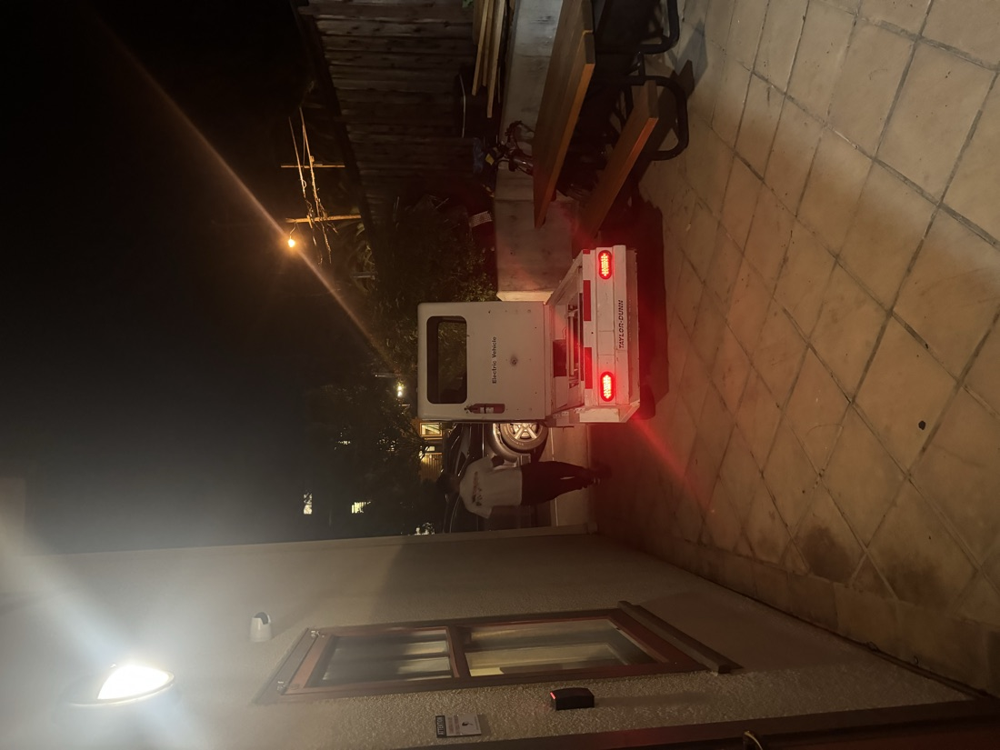
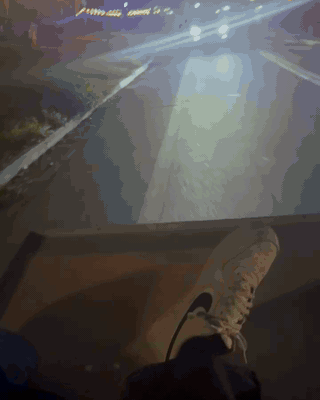
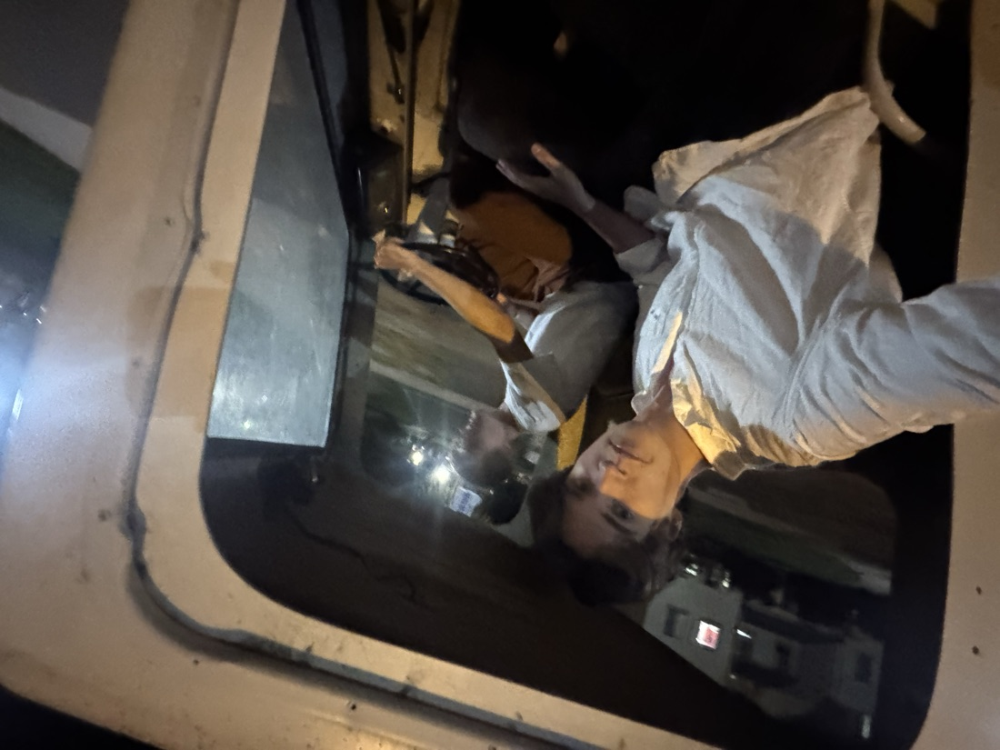

Electric truck restoration
Ongoing — with Brooks Modesitt
There’s a story at Stanford, often told by the people on the solar car team: in the nineties, a student named JB Straubel bought a wrecked Porsche 944, threw out the blown engine, and filled it with batteries. It set a world record for EV drag racing, and he went on to co-found Tesla. I read about it growing up in Ashlee Vance’s Elon Musk book, and iv’e wanted to do something similar ever since.
So when a 1990s Taylor-Dunn electric truck turned up on Facebook Marketplace, my friend Brooks and I didn’t really have a choice in the matter.

The trade
Brooks owns a motorbike that cost him about $30. I forget how this happened, but I think it was because he paid the outstanding property tax on an abandoned lot that happened to have a motorbike sitting on it. This is legal apparently. We traded the bike plus $300 for the truck.
The facebook marketplace listing was completely honest: "it can run, but isn’t." For the first stretch of its life with us, the truck was Brooks powered.

Batteries
The first problem was the batteries. They were leaking acid and lead everywhere, and half of them read 0V. We found a job lot of car batteries in South San Francisco for $100 — then told the seller what they were for, and he gave them to us for free! shoutout.

For wiring guidance we tracked down the original Taylor-Dunn manual online — a scan of a scan of a photocopy — and OCRed it back into something searchable/that we could put into codex.
The mammoth session
We got the batteries back to campus at noon. The moment they went in, the 12V systems woke up — horn, lights, indicators, all of it, blinking like nothing had ever been wrong. Very encouraging. Less encouraging: every time we wired up the traction pack, it threw up huge sparks. we would really dread having to disconnect and reconnect the batteries because the chances of being electrocuted felt high.

We disconnected and reconnected every bit of wiring, and still the truck wouldn’t move. After a lot of staring at the OCRed manual, and the motor controller (the relays were huge) we traced it to the accelerator pedal, which turned out to be broken in a permanent state of stuck-down — the truck thought it was floored at all times, and a safety interlock (reasonably) refused to cooperate. So we took the pedal apart and found the culprit: a dead limit switch.
Here’s the beautiful part. It was the exact limit switch stocked in the ME210 mechatronics workshop — a class I’d taken the previous quarter. At this point, it was 1am. The workshop is open around the clock to enrolled students, and surprisingly, open at 1am to students who were enrolled one quarter ago and are willing to walk with purpose. We “borrowed” one. The quotes are doing some work in that sentence, but I did take the class, and the truck needed it more than the shelf did.

Desolder the dead switch, solder in the new one, reassemble the pedal, hold breath, wire the pack — and the truck came to life.

3am
Noon to 3am, one continuous session. Would not change a thing.


Next
issues with stanford's policy on vehicles + modern batteries, brushless motor, and drive by wire.